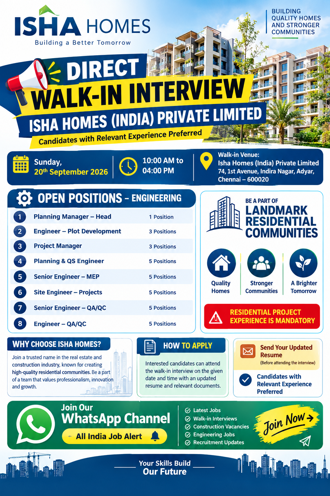

📢 All India Job Alert WhatsApp Channel
Latest private jobs, construction vacancies, engineering jobs, walk-in interviews and recruitment updates ke liye hamara WhatsApp Channel join karein.
JOIN ALL INDIA JOB ALERTAll India Job Alert
Isha Homes Walk-in Interview 2026
Isha Homes (India) Private Limited has announced a direct walk-in interview for experienced engineering and construction professionals in Chennai. The recruitment drive is scheduled for Sunday, 20th September 2026, and candidates with relevant residential project experience are preferred. The company is looking for professionals across planning, project management, plot development, quantity surveying, MEP, site execution and quality assurance and quality control functions.
This recruitment opportunity is particularly relevant for candidates who have experience in residential construction projects and are looking for engineering and project-based career opportunities in Chennai. Multiple positions are available, with several vacancies across different engineering departments. Candidates should carefully review the position requirements and ensure that their professional experience matches the role before attending the interview.
The walk-in interview provides candidates an opportunity to meet the recruitment team directly and discuss their experience, technical skills and project exposure. Professionals should carry an updated resume and relevant supporting documents. Candidates with experience in residential projects are specifically preferred according to the recruitment information provided.
Walk-in Interview Details
🏢 Company: Isha Homes (India) Private Limited
📅 Date: Sunday, 20th September 2026
⏰ Time: 10:00 AM to 04:00 PM
📍 Venue:
Isha Homes (India) Private Limited
74, 1st Avenue, Indira Nagar,
Adyar, Chennai – 600020
🚨 Important: Residential Project Experience is Mandatory.
Open Positions – Engineering
1. Planning Manager – Head
Vacancy: 1 Position
The Planning Manager – Head position is intended for an experienced planning professional capable of handling project planning and monitoring activities. Candidates should have strong knowledge of construction planning, project schedules, progress monitoring, coordination and reporting. Professionals who have handled planning functions for residential projects can highlight their previous project responsibilities and leadership experience in their CV.
2. Engineer – Plot Development
Vacancy: 3 Positions
The Plot Development Engineer role is suitable for engineering professionals involved in development and execution activities related to residential plots and project infrastructure. Candidates should highlight their experience in site execution, coordination, drawings, measurements, contractor coordination and construction activities. Residential project experience will be particularly relevant for this position.
3. Project Manager
Vacancy: 3 Positions
Project Managers will be responsible for managing and coordinating project activities while ensuring planned execution and progress. Candidates with experience managing residential construction projects should clearly mention their previous projects, team management experience, contractor coordination, project scheduling, quality coordination and overall site responsibilities.
4. Planning & QS Engineer
Vacancy: 5 Positions
Planning and Quantity Surveying professionals can apply for this opening. Candidates should have knowledge of project planning, quantity measurement, billing-related activities, project progress and construction documentation. Experience combining planning and quantity surveying functions can be useful for this position. Applicants should mention their relevant software knowledge and project experience in their updated resume.
5. Senior Engineer – MEP
Vacancy: 5 Positions
Senior MEP Engineers can consider this opportunity if they have relevant experience in residential projects. Candidates should highlight their experience in MEP coordination, site execution, drawings, services coordination, contractor management, inspection and project delivery. Professionals should clearly mention their MEP specialization and previous residential project exposure.
6. Site Engineer – Projects
Vacancy: 5 Positions
Site Engineers are required for project-related construction activities. Candidates should have practical site experience and should be comfortable coordinating daily construction work, contractors, materials, drawings, measurements and project teams. Residential construction experience is important for this recruitment drive.
7. Senior Engineer – QA/QC
Vacancy: 5 Positions
Senior QA/QC Engineers can apply if they have relevant construction quality experience. Candidates should highlight their knowledge of quality inspections, construction specifications, testing, documentation, inspection requests, material checks and coordination with project teams. Residential project experience should be clearly mentioned.
8. Engineer – QA/QC
Vacancy: 5 Positions
The Engineer – QA/QC opening is suitable for professionals involved in construction quality control and site inspection. Applicants should mention their experience with quality documentation, material inspection, site checks, testing and coordination with engineering and construction teams.
Vacancy Summary
| Position | Vacancies | Project Preference |
|---|---|---|
| Planning Manager – Head | 1 | Residential Project Experience |
| Engineer – Plot Development | 3 | Residential Project Experience |
| Project Manager | 3 | Residential Project Experience |
| Planning & QS Engineer | 5 | Residential Project Experience |
| Senior Engineer – MEP | 5 | Residential Project Experience |
| Site Engineer – Projects | 5 | Residential Project Experience |
| Senior Engineer – QA/QC | 5 | Residential Project Experience |
| Engineer – QA/QC | 5 | Residential Project Experience |
Who Can Apply?
The recruitment is suitable for engineering and construction professionals who have relevant experience in residential projects. Candidates from planning, project management, quantity surveying, MEP, site execution and QA/QC backgrounds can review the available positions and apply for the role that best matches their skills. Applicants should provide accurate information regarding their experience, qualifications and previous project responsibilities.
Professionals applying for senior positions should highlight their leadership experience, project size, team-handling responsibilities, planning or execution responsibilities and overall contribution to previous residential developments. Engineers applying for site, MEP, planning or QA/QC roles should clearly mention their technical skills and actual responsibilities in previous projects.
Why Residential Project Experience Matters
Residential construction projects involve multiple disciplines working together, including civil execution, planning, quantity surveying, MEP coordination, quality control and project management. Professionals who have previously worked in residential communities can understand the coordination required between different departments and contractors.
For this reason, candidates should make their residential project experience clearly visible in their CV. Mentioning project names, location, project type, designation, duration and responsibilities can help the recruitment team understand the candidate's background. Candidates should avoid adding experience that they cannot demonstrate during the interview.
How to Apply
Interested and eligible candidates can attend the direct walk-in interview on Sunday, 20th September 2026.
📅 Date: 20th September 2026
⏰ Time: 10:00 AM to 04:00 PM
📍 Walk-in Venue:
Isha Homes (India) Private Limited
74, 1st Avenue, Indira Nagar, Adyar,
Chennai – 600020
Candidates can also share their updated resume through the recruitment email before attending the interview.
📧 Email:
recruitment@ishahomes.com
📱 Mobile:
+91-9940114602
Candidates should mention the position they are applying for and provide accurate information about their residential project experience.
Documents Candidates Should Carry
- Updated Resume / CV
- Educational Qualification Certificates
- Experience Certificates
- Government ID Proof
- Recent Passport-size Photographs
- Previous Employment Details
- Relevant Technical Certificates, if applicable
Resume Preparation Tips
Candidates attending the interview should prepare a clear and updated resume. The CV should contain the candidate's full name, contact details, educational qualification, total experience, current or previous designation and detailed project experience. For construction professionals, project-specific information is especially useful.
Planning professionals should mention scheduling, progress monitoring and planning tools they have used. QS professionals should mention quantity measurement, billing and estimation experience. MEP Engineers should highlight coordination and services experience. QA/QC professionals should mention inspection, testing and quality documentation experience. Project Managers and senior engineers should provide details of their leadership and project execution responsibilities.
Interview Preparation
Candidates should be prepared to explain their previous residential projects during the interview. Interviewers may discuss the candidate's responsibilities, project size, construction activities, team coordination, planning, quality processes and technical knowledge. Applicants should answer honestly and confidently based on their actual experience.
Candidates travelling from outside Chennai should plan their journey in advance and reach the venue within the interview timing. It is recommended to keep both digital and physical copies of the updated resume and relevant documents.
Important Notice
Residential Project Experience is Mandatory. Candidates should apply only for positions that match their professional background and experience.
Recruitment information can be subject to change. Candidates should confirm the latest interview details with the provided recruitment contact before travelling, especially if they are travelling from another city.
Candidates should never pay money to anyone promising guaranteed selection or employment. Do not share OTPs, ATM PINs, passwords, banking passwords or other sensitive financial information with unknown persons.
📲 Get More Private Job Updates
Civil Engineer Jobs, Construction Jobs, Planning Jobs, QS Jobs, MEP Jobs, QA/QC Jobs, Site Engineer Jobs and Walk-in Interview updates ke liye All India Job Alert WhatsApp Channel join karein.
JOIN WHATSAPP CHANNELAll India Job Alert
Frequently Asked Questions
When is the Isha Homes walk-in interview?
The direct walk-in interview is scheduled for Sunday, 20th September 2026.
What is the interview timing?
The interview will be conducted from 10:00 AM to 04:00 PM.
Where is the interview venue?
The venue is Isha Homes (India) Private Limited, 74, 1st Avenue, Indira Nagar, Adyar, Chennai – 600020.
Which positions are available?
Openings are available for Planning Manager – Head, Engineer – Plot Development, Project Manager, Planning & QS Engineer, Senior Engineer – MEP, Site Engineer – Projects, Senior Engineer – QA/QC and Engineer – QA/QC.
Is residential project experience required?
Yes. Residential Project Experience is mandatory according to the recruitment information provided.
How can candidates send their resume?
Candidates can send their updated resume to recruitment@ishahomes.com.
What is the recruitment contact number?
The provided contact number is +91-9940114602.
Final Words
Isha Homes (India) Private Limited's direct walk-in interview offers multiple opportunities for experienced engineering and construction professionals in Chennai. With openings across planning, plot development, project management, quantity surveying, MEP, site engineering and QA/QC, candidates from different construction disciplines can find positions matching their professional background.
The recruitment drive is especially relevant for candidates with residential project experience. Applicants should therefore make their residential construction experience clearly visible in their resume. Details such as project type, designa